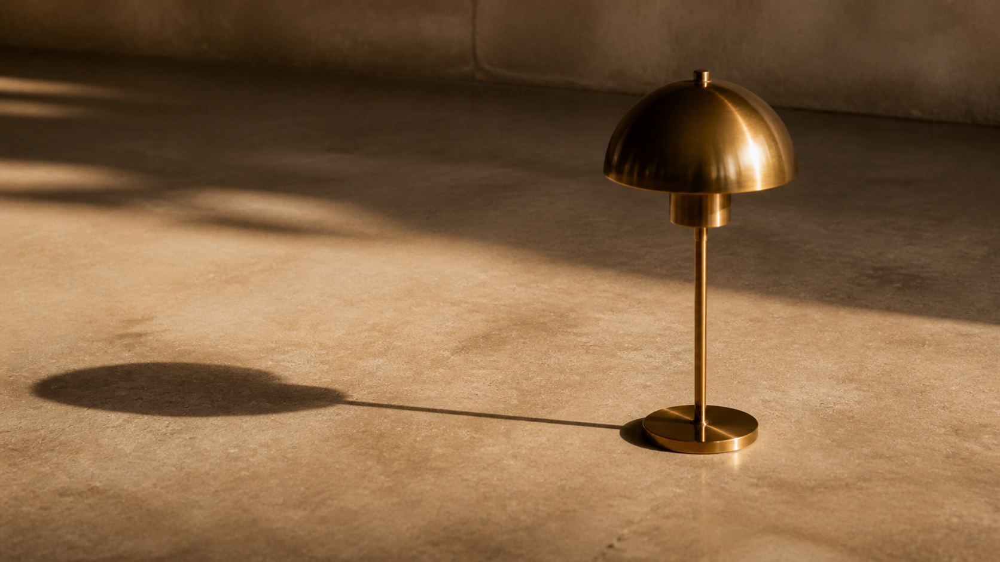
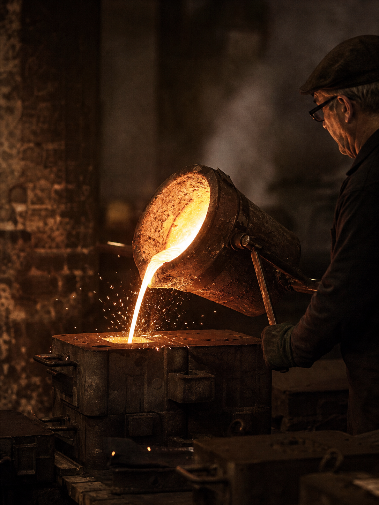
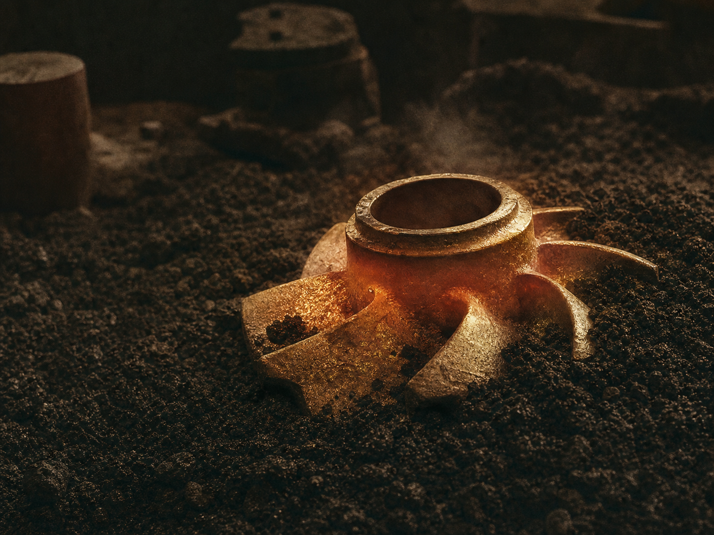
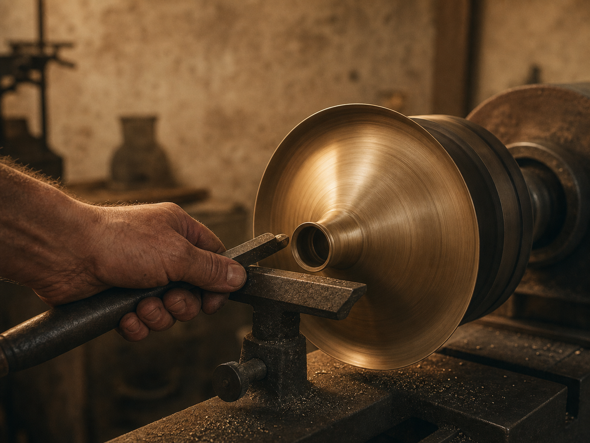
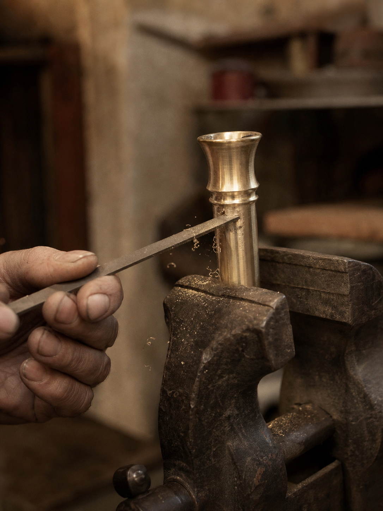
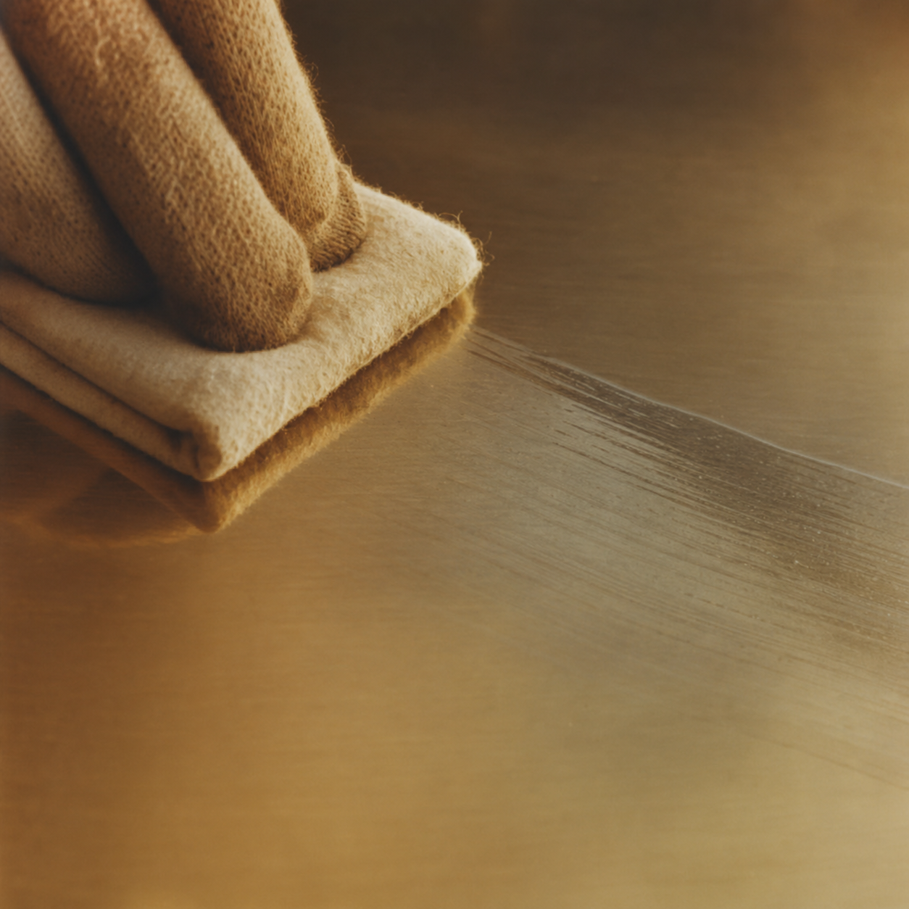
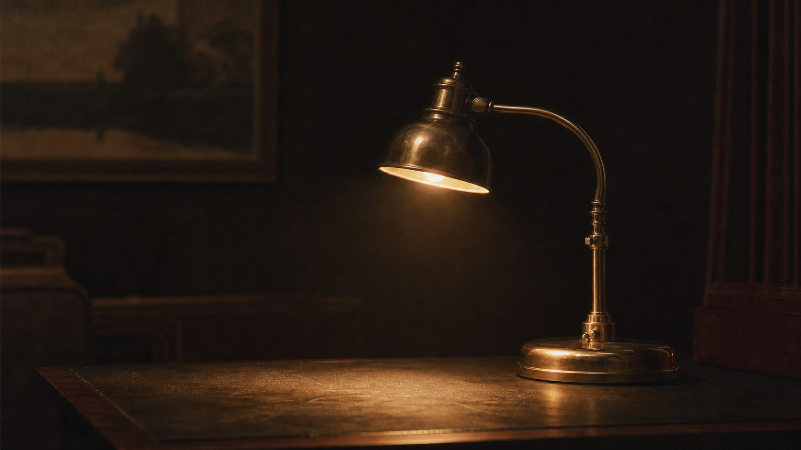
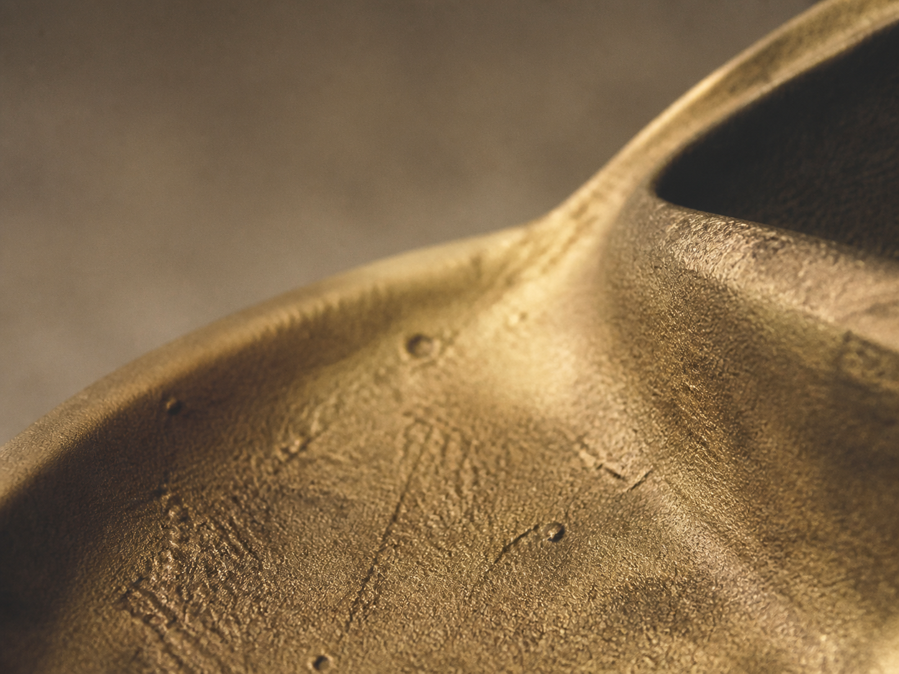

The whole
object.
Off the wordmark and into the open. One lamp, followed from the pour to the lit desk, the same piece you only ever glimpsed through the letters.
Six moments,
one piece of brass.
Nothing here is a different product. It is the single object, caught at each stage of its making.







The grain you read through the name is this, one continuous surface.
Cast
No joins, no welds, no seams the eye can find. The metal runs unbroken from base to shade, which is why a single word can hold the whole of it.
That is the
whole line.
There will not be a second object. When the foundry has nothing left to refine on this one, it stops. The work is to make the same lamp better, not to make more lamps.
If you have walked all the way around it and still want it on your desk, there is one way left to go.
Speak to the foundry